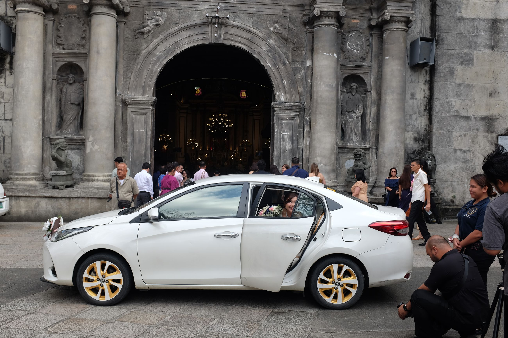
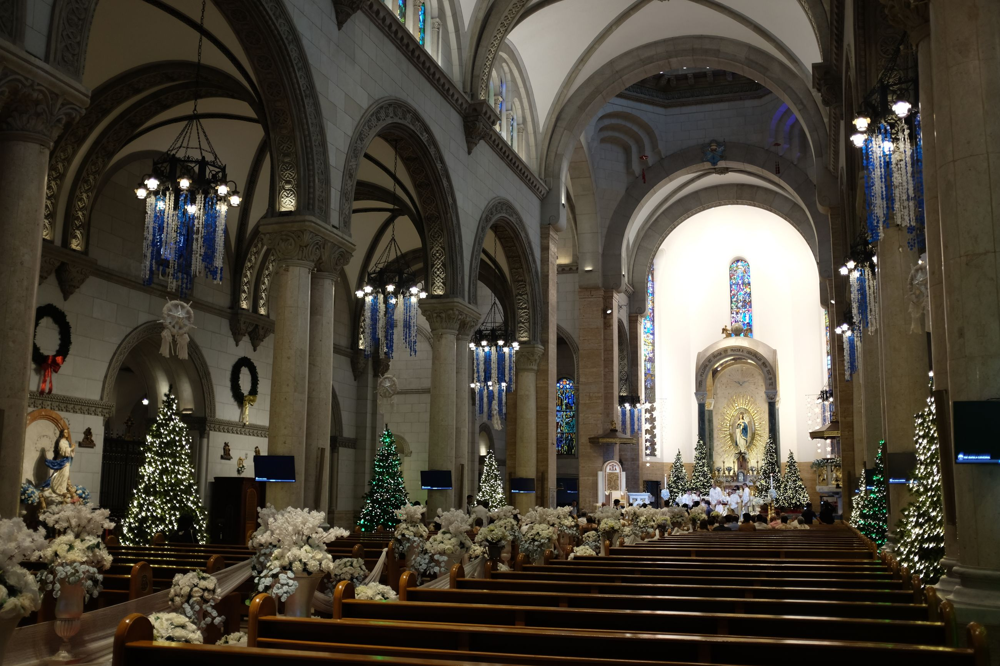
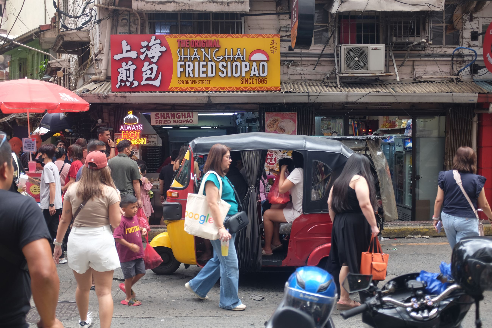
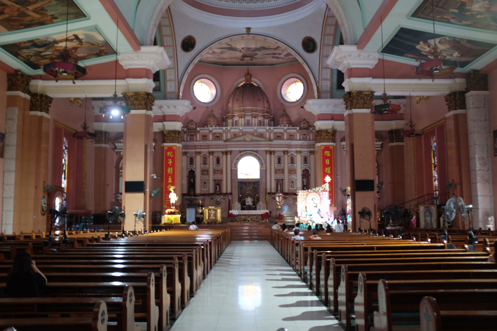

Third time in Manila. This time, just to see some friends.
Compared to our first time here, it feels more quiet. Everything feels quiet. I'm not sure if I'm used to the bustle of Asia now, or if it's that it actually is more quiet. The only place that was similar to before was Binondo, with its busy streets and overhead wiring.
The service staff were also weird. It was like everyone was fluent in English, but it was at times still hard to communicate. We did notice that all restaurants will repeat orders and ask for food allergies, which is inclusive.
We did all the usual haunts as before: Intramuros (which had a facelift since the last time and felt a lot more gentrified), Binondo (which kept is usual bustle, but somehow seemed slightly quieter), and Makati. We met up again with friends from the UK (Jane) and Philippines (Michael, Raynard). Of couse, since we saw Michael, we ended the trip hanging out at the Shangri-La just relaxing. Chinese Filipinos be doing some real rich people shit.
Some smattering of photos below.
   